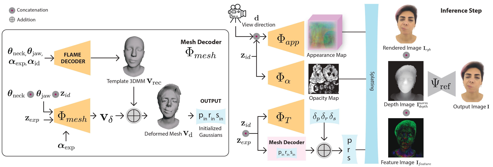

GRMM: Real-Time High-Fidelity Gaussian Morphable Head Model with Learned Residuals
Abstract
3D Morphable Models (3DMMs) enable controllable facial geometry and expression editing for reconstruction, animation, and AR/VR, but traditional PCA-based mesh models are limited in resolution, detail, and photorealism. Neural volumetric methods improve realism but remain too slow for interactive use. Recent Gaussian Splatting (3DGS) based facial models achieve fast, high-quality rendering but still depend solely on a mesh-based 3DMM prior for expression control, limiting their ability to capture fine-grained geometry, expressions, and full-head coverage. We introduce GRMM, the first full-head Gaussian 3D morphable model that augments a base 3DMM with residual geometry and appearance components, additive refinements that recover high-frequency details such as wrinkles, fine skin texture, and hairline variations. GRMM provides disentangled control through low-dimensional, interpretable parameters (e.g., identity shape, facial expressions) while separately modelling residuals that capture subject- and expression-specific detail beyond the base model's capacity. Coarse decoders produce vertex-level mesh deformations, fine decoders represent per-Gaussian appearance, and a lightweight CNN refines rasterised images for enhanced realism, all while maintaining 75 FPS real-time rendering. To learn consistent, high-fidelity residuals, we present EXPRESS-50, the first dataset with 60 aligned expressions across 50 identities, enabling robust disentanglement of identity and expression in Gaussian-based 3DMMs. Across monocular 3D face reconstruction, novel-view synthesis, and expression transfer, GRMM surpasses state-of-the-art methods in fidelity and expression accuracy while delivering interactive real-time performance.
Overview

3D Morphable Models (3DMMs) enable controllable facial geometry and expression editing for reconstruction, animation, and AR/VR, but traditional PCA-based mesh models are limited in resolution, detail, and photorealism. Neural volumetric methods improve realism but remain too slow for interactive use. Recent Gaussian Splatting (3DGS) based facial models achieve fast, high-quality rendering but still depend solely on a mesh-based 3DMM prior for expression control, limiting their ability to capture fine-grained geometry, expressions, and full-head coverage. We introduce GRMM, the first full-head Gaussian 3D morphable model that augments a base 3DMM with residual geometry and appearance components, additive refinements that recover high-frequency details such as wrinkles, fine skin texture, and hairline variations. GRMM provides disentangled control through low-dimensional, interpretable parameters (e.g., identity shape, facial expressions) while separately modelling residuals that capture subject- and expression-specific detail beyond the base model's capacity. Coarse decoders produce vertex-level mesh deformations, fine decoders represent per-Gaussian appearance, and a lightweight CNN refines rasterised images for enhanced realism, all while maintaining 75 FPS real-time rendering. To learn consistent, high-fidelity residuals, we present EXPRESS-50, the first dataset with 60 aligned expressions across 50 identities, enabling robust disentanglement of identity and expression in Gaussian-based 3DMMs. Across monocular 3D face reconstruction, novel-view synthesis, and expression transfer, GRMM surpasses state-of-the-art methods in fidelity and expression accuracy while delivering interactive real-time performance.Downloads

Citation
@misc{mendiratta2025grmmrealtimehighfidelitygaussian,
title={GRMM: Real-Time High-Fidelity Gaussian Morphable Head Model with Learned Residuals},
author={Mohit Mendiratta and Mayur Deshmukh and Kartik Teotia and Vladislav Golyanik and Adam Kortylewski and Christian Theobalt},
year={2025},
eprint={2509.02141},
archivePrefix={arXiv},
primaryClass={cs.GR},
url={https://arxiv.org/abs/2509.02141},}
Acknowledgments
This work was supported by the ERC Consolidator Grant 4DReply (770784).
Contact
For questions, clarifications, please get in touch with:Mohit Mendiratta
mmendira@mpi-inf.mpg.de